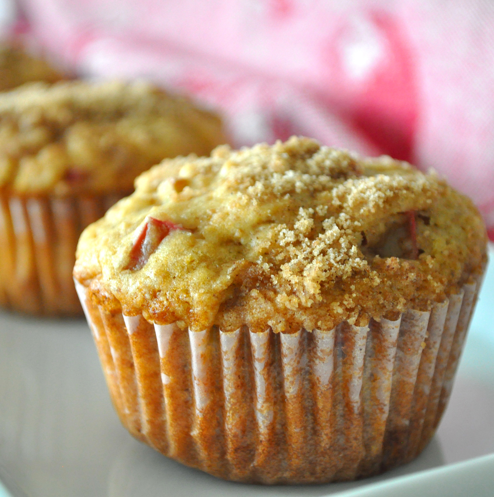

Aunt Norma's Rhubarb Muffins

Description
This rhubarb muffin recipe features a crunchy sweet sugar topping and makes fabulous muffins great on their own with no extra added butter or jam.
Ingredients
- 2 ½ cups flour
- 1 teaspoon baking soda
- 1 teaspoon baking powder
- ½ teaspoon salt
- 1 ¼ cups brown sugar
- 1 cup buttermilk
- ½ cup vegetable oil
- 1 large egg
- 1 teaspoon vanilla extract
- 1 ½ cups diced rhubarb
- ½ cup chopped walnuts
Steps
- Preheat the oven to 350 degrees F (175 degrees C). Grease two 12-cup muffin pans or line with paper cups.
- Make muffins: Stir together flour, baking soda, baking powder, and salt in a medium bowl. Beat brown sugar, buttermilk, oil, egg, and vanilla in a separate bowl with an electric mixer until smooth. Pour in dry ingredients and mix by hand just until blended. Stir in rhubarb and walnuts. Spoon batter into the prepared cups, filling almost to the top.
- Make streusel: Stir together sugar, melted butter, and cinnamon in a small bowl; sprinkle about 1 teaspoon streusel on top of each muffin.
- Bake in the preheated oven until muffin tops spring back when lightly pressed, about 25 minutes. Cool in the pans for at least 10 minutes before removing them.